k-Day 118｜98%的自由
早上八點被熱醒，手機只剩49%。三顆行動電源都耗盡了，拿出太陽能板充電。
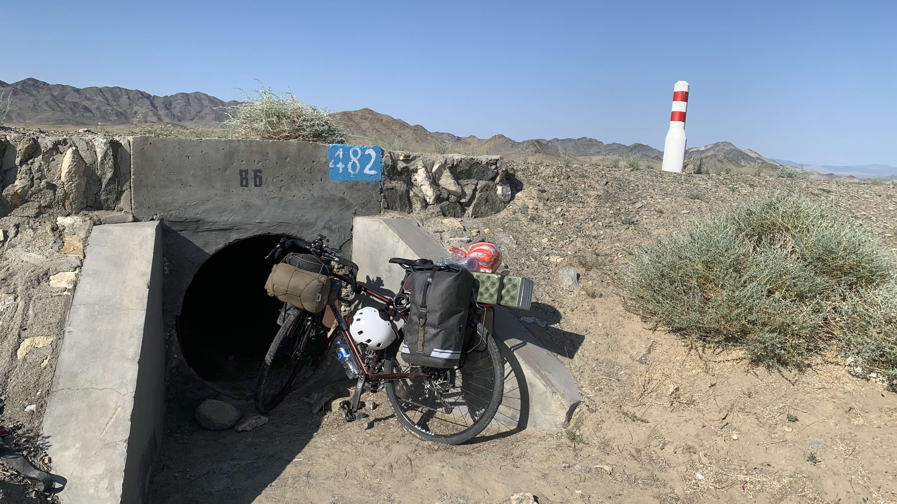
今日下午三點前應該都會是微順風，預計中午左右可以抵達布爾根，還沒決定要不要在此住一晚，打算進城後再決定。收拾好行李，幫二十三號和涵洞拍張合照。在蒙古的最後一個涵洞。
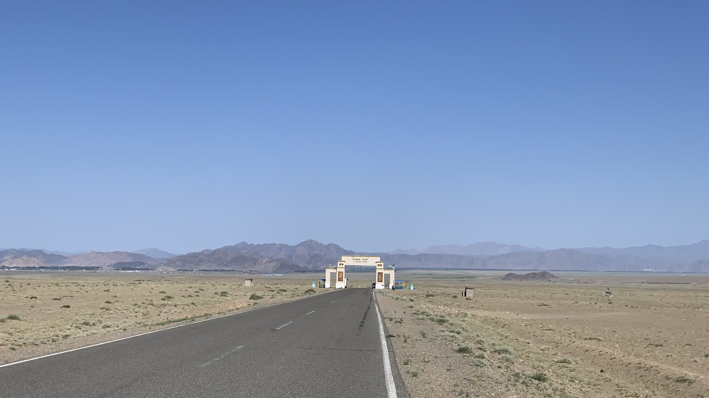
咻地一下，十點左右抵達布爾根的入口。
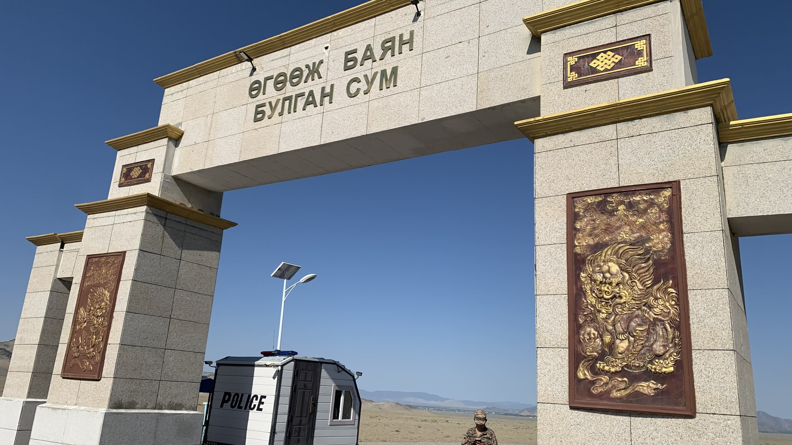
似乎是牛隻疫情，被留置在城門口。守城門的警察讓我把二十三號靠在柱子上，搬出小凳子，示意要我坐下休息。
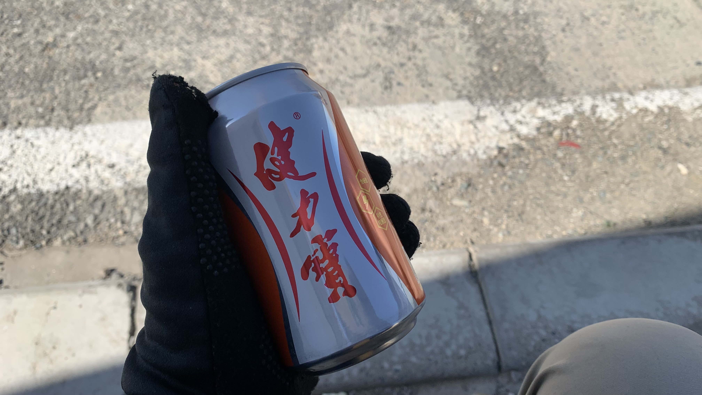
看我坐下，警察回到休息室，出來時手上拿了一瓶健力寶遞給我。
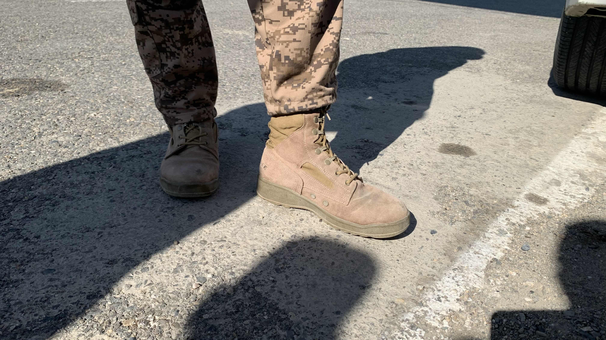
城門邊有三個人，一位是警察，一位是軍人，另一位看不出職業。等待期間三人圍著二十三號參觀，我則參觀他們的裝備。軍人穿的軍靴是Belleville的沙漠靴。
等了許久，終於軍人和電話那頭說完話，將手機開擴音，電話那頭的女士告訴我現在大家已經為此焦頭爛額，讓我直接前往塔什干。
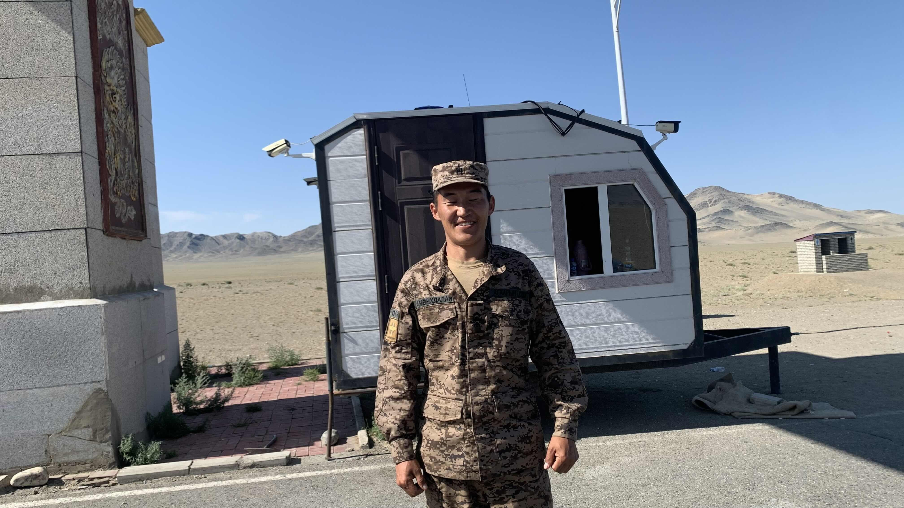
答應後終於放行，警察先生不知去了哪裡。幫軍人拍了一張照，和他說了謝謝。在等消息時他幫我和二十三號與城門拍了張合照。
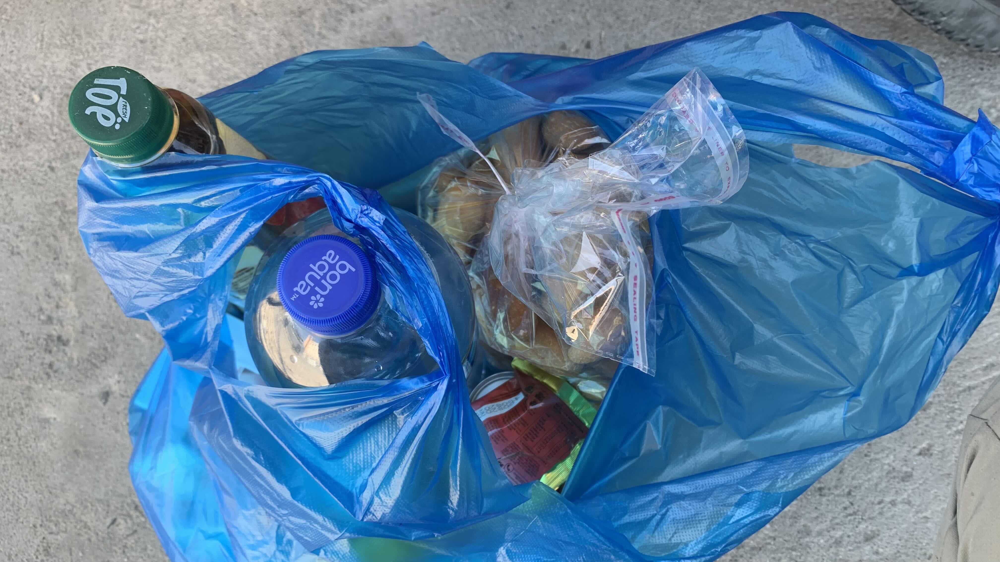
抵達布爾根後沒有逗留，在城鎮外圍的商店採買未來在中國會想念的產品，當然抓了一包炸麵團。塞了一顆麵團，連午飯都沒吃就開始往口岸前進。
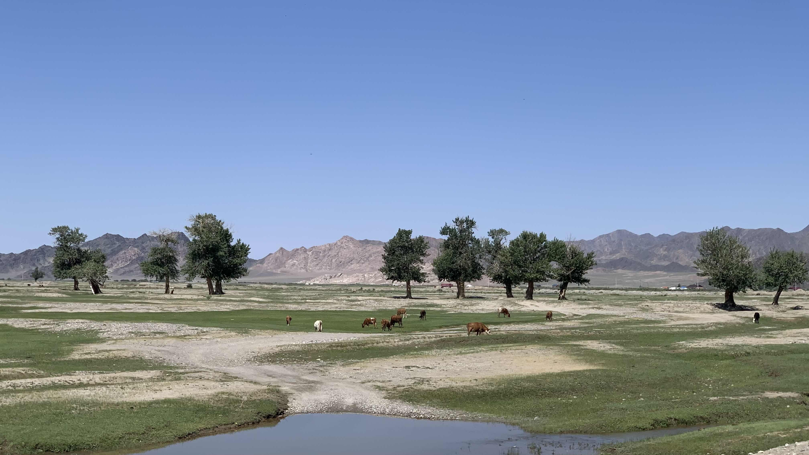
布爾根的地貌很符合刻板印象中的新疆。
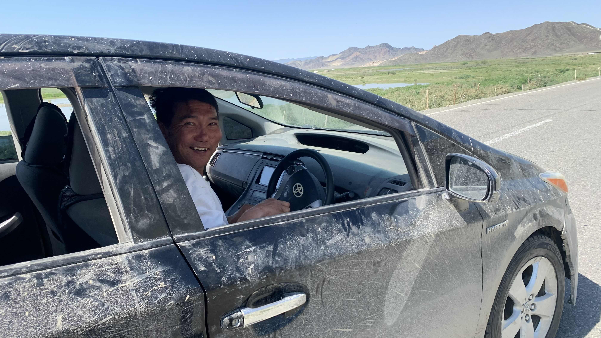
緩緩爬坡時一輛黑色轎車在後面按了幾聲喇叭，下意識靠向路邊拉開距離。
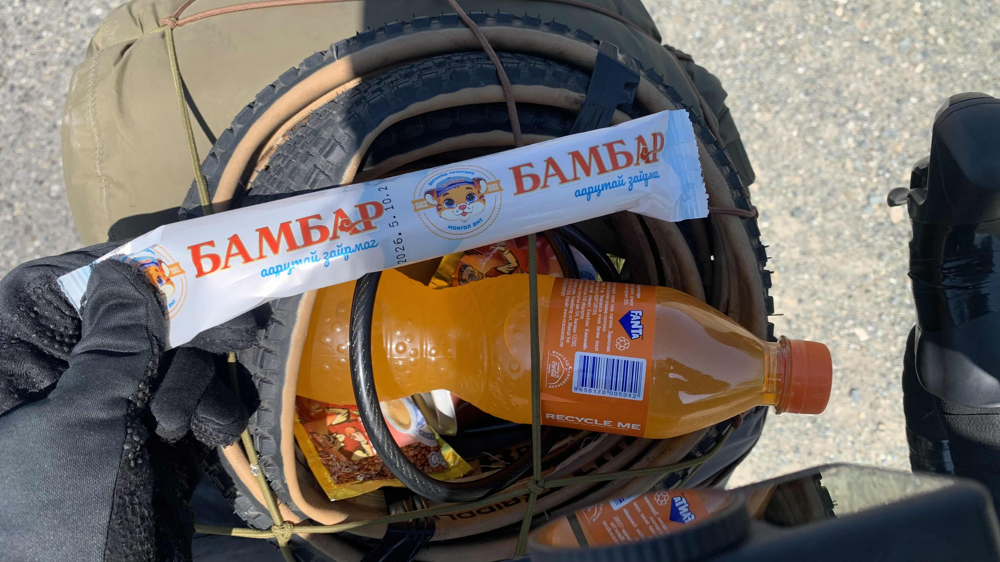
對方拿出一瓶芬達橘子汽水、一隻酸奶冰棍，想了一下，又抓了幾包爺爺咖啡丟給我。因為對方會說一點日文，我剛好也聽得懂那麼一點，於是知道的小孩在前面（他指的山坡）。剛剛下意識躲開車子，為自己感到有些哀傷。毫不猶豫伸手接水的我已經消失了。
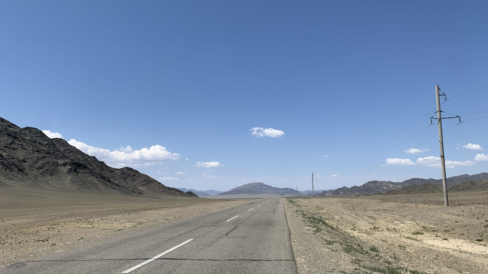
這裡的山是虎皮蛋糕的造型，地上全是礫石。
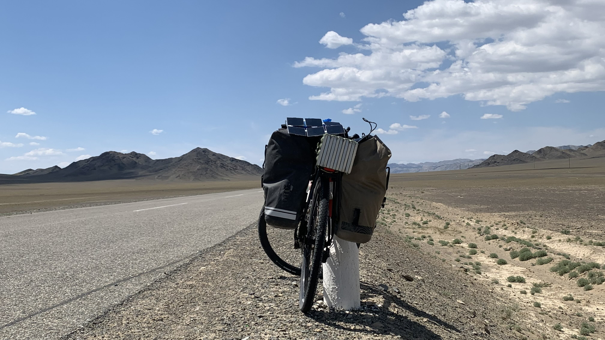
太熱了，坐在涵洞上的水泥磚喝汽水。行動電源都沒電了，拉出太陽能板充電。
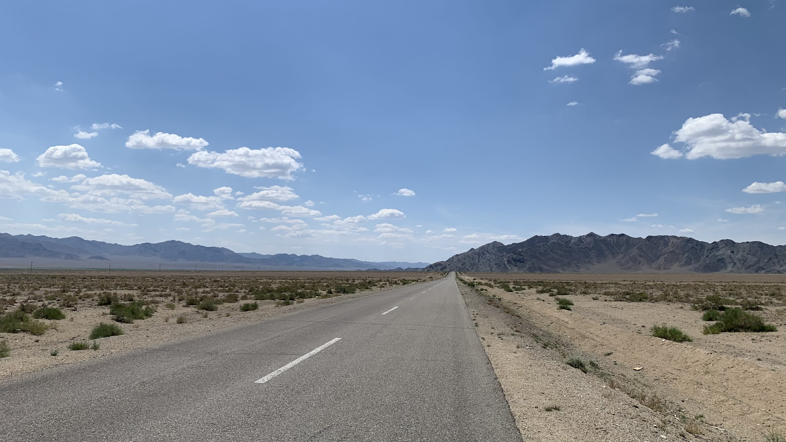
經過重複再重複的虎皮蛋糕山和發燙的礫石灘。
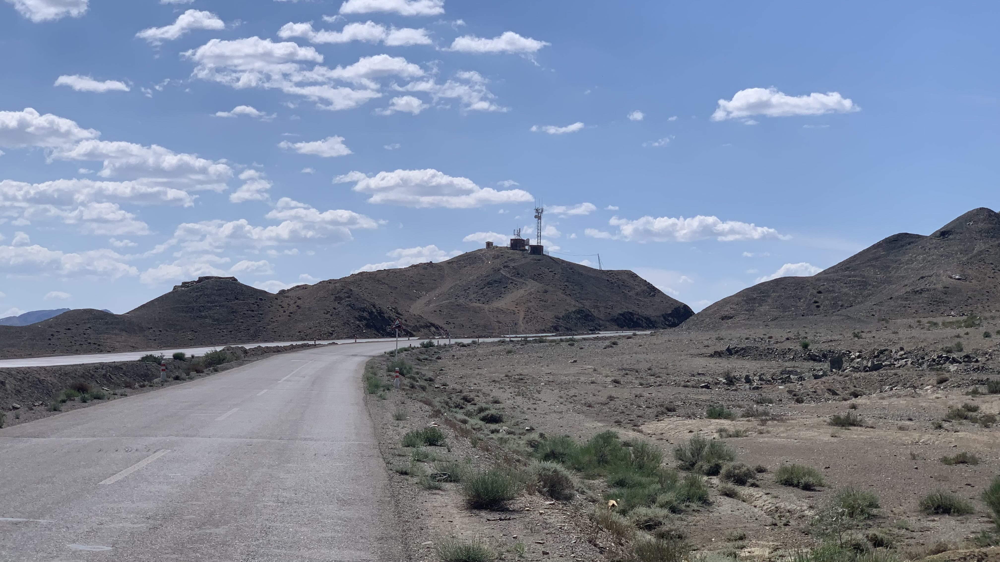
來到傳說中的塔什肯口岸。
口岸不能拍照，就連這座山的照片都被刪掉兩張。蒙古這邊的安檢顯得有點隨意。只是讓我把行李放著，人到小房間等待，沒多久就把護照交還給我，讓我往中國方向離開。
新疆這邊沒敢開玩笑，出發前聽了太多各式各樣的新聞，加上一直被身邊的朋友恐嚇說會被割腰子，因此全程相當配合。
說是這樣說，騎著車進大廳前就被攔下來。對方禮貌地要求看護照。我自然地掏出插在襯衫口袋的護照，完全忘了台胞證的存在。對方沒有罵我，而是用對講機先通報了有位台灣人騎自行車帶著護照要過口岸。接著來了另一位負責檢查台胞證的人員，一臉感興趣地笑著說：「你是台灣人啊？」、「聽說你還帶著中華民國的護照啊？」、「蒙古那邊要看？他們還要求看這個啊？」
就這樣順利進入安檢大廳。所有的行李都必須過機器，折疊刀拿出來確認大小、詢問我有沒有攜帶紙本地圖，如果有的話希望我拿出來讓他們看看。後續檢查了電動充電器、打氣筒、備用鏈條等等，拿出電腦又再過了一次。
接下來大包小包推著車走到生物檢疫通道，貌似注射器的內胎引起安檢人員的興趣，接著是沙蓋，因為是羊骨頭必須拿出來檢查。掏出背包底層的羊腳踝，沒想到對方笑著說：「你這好假啊。」就這樣完成通關程序。
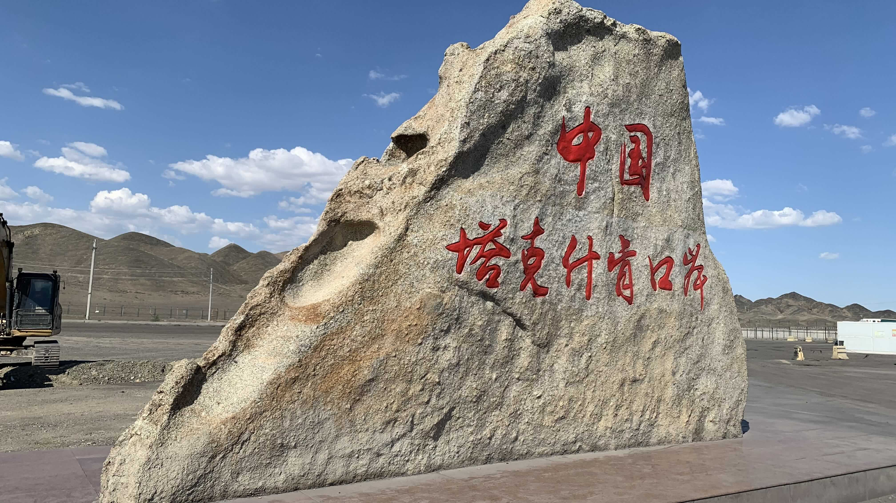
剛才見到的口岸人員看到我坐在門口，走來和我說往前十五公里就有城鎮，那裡有吃的也有住的，待會從旁邊通道出去就可以。
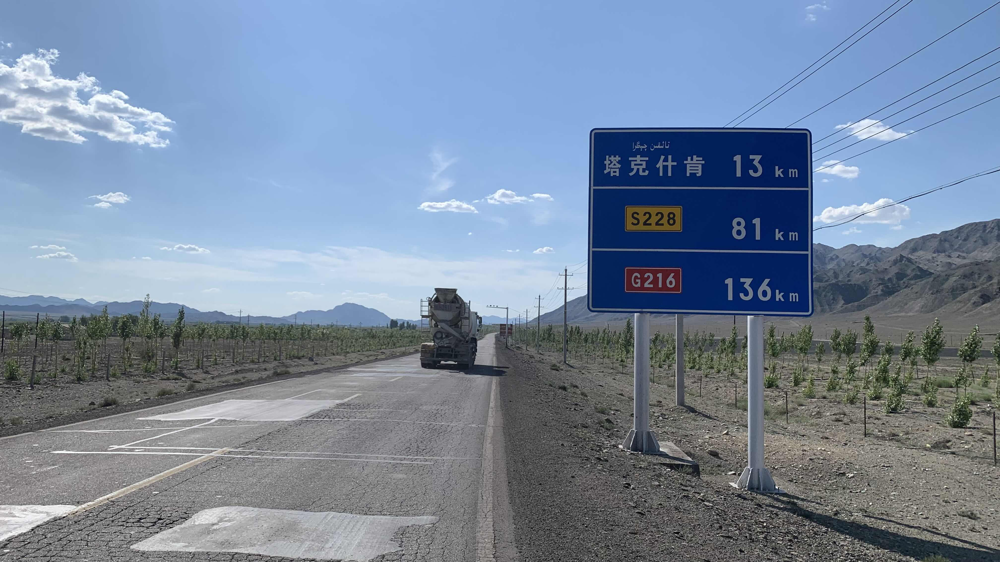
按喇叭卡車又出現了。
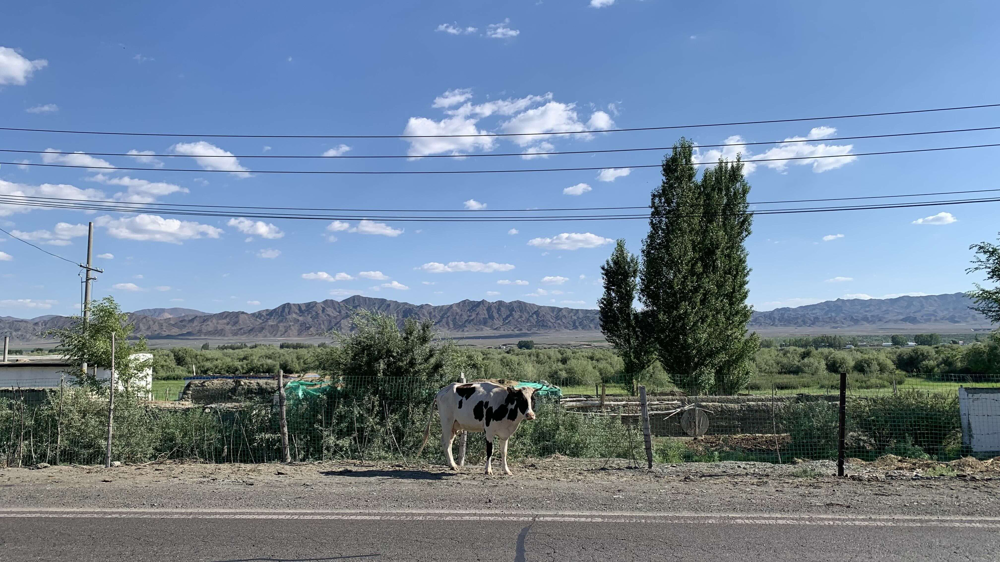
連牛的氣質都秀氣了起來。
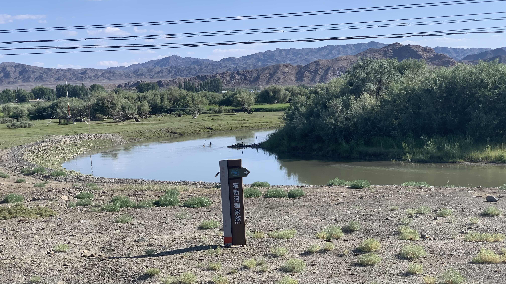
這條河是從蒙古連過來的，告示牌上寫著河狸保護地。回想前幾天確實看到許多黃色比松鼠大一點的扁尾巴小動物，當時還笑著想這裡怎麼回有河狸。
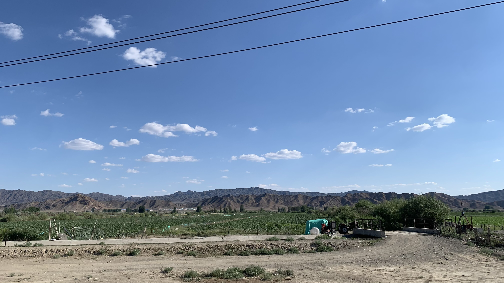
雖然預期過了口岸會有農地景象出現，但是眼前這個水閘還是讓我愣了一下。過了一到看不見的真空區，就變成農耕社會了。
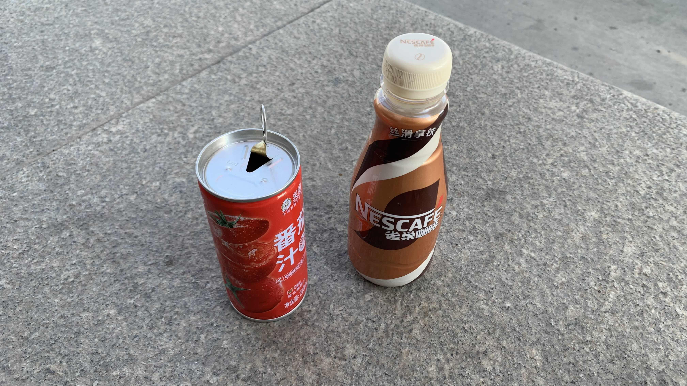
很懷念中國石油，外面拉著鐵網圍著柵欄，進門後賣的果汁也和遼寧、內蒙不同，中油蕃茄汁取代Toë蘿蔔汁成為未來的精神支柱。
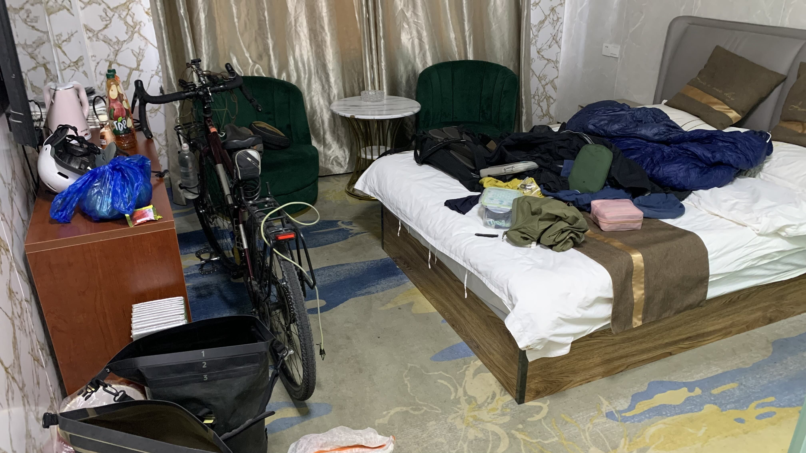
鎮上的酒店都不便宜，問了一間一百塊的旅店，有免費洗衣機，房間廁所都乾淨，穩定且強而有力的水壓和滾燙的熱水，決定在此多住兩天。
把所有行李掏出來，臭衣服全都丟進洗衣機，自從離開烏蘭巴托後一直處於生存狀態。
蒙古的環境自然會讓人有一種「曾經共患難」的感覺。
半夜三點了，身心靈都在享受著人造空間。
今日花費：行動糧食 587+428、中國esim 787（台幣）、加油站飲料 9.72、晚餐 28、住宿 100（人民幣）元